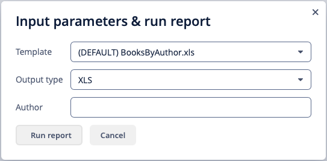
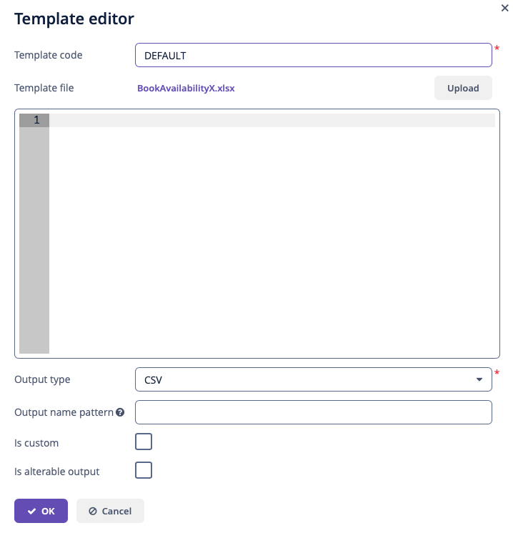
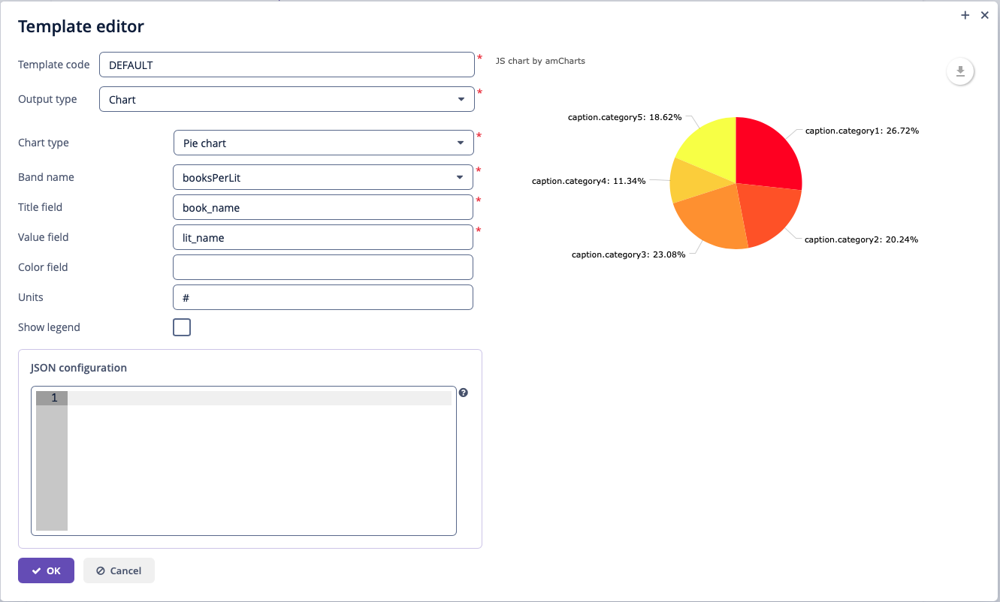
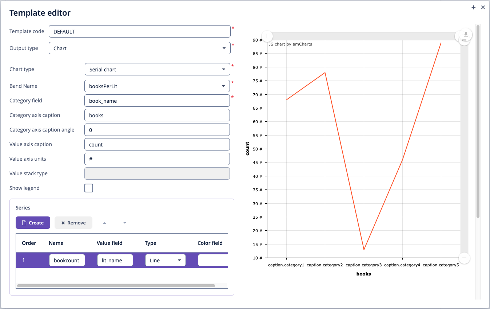
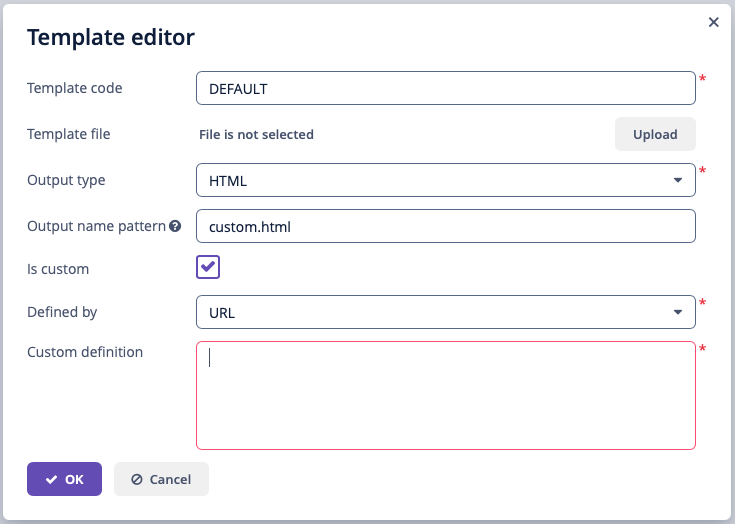

Report Template
Adding Template
You can add report templates in the report editor screen. Create or edit an existing report in the reports browser and switch to the Templates tab:
One report can have multiple templates but one of the templates must be selected as default in the Report structure tab.
Below is the form to add a template:
-
Template code – identification code for a template.
-
Template file – loaded from the file system and saved to the database along with the report structure description.
-
Output type – report output type. It should be consistent with the template file type according to the rules described in output format compliance.
-
Output name pattern – optional file name pattern, which will be used to generate the file name for the produced report. It can either be a constant string or contain a report parameter as a variable, for example,
${header.authorName}.xlsx. More sophisticated patterns with several parameters and string concatenation can also be created as a script in any band of report structure, for example,${Root.title}.xlsx, wheretitleis a result of the script:[['title' : ('Report for '+params['author'].firstName+' '+params['author'].lastName)]] -
Is custom – the flag to use custom formatting logic not covered by any provided formatter. When it is checked, you need to define two additional fields:
-
Defined by – the way the custom template is defined: by class, script or URL.
-
Custom definition – the fully qualified name of the Java class, Groovy script content, or the URL used to create the template. If you select Script, then in the Groovy script, the parameters below can be used:
-
params– parameters map is available by aliasparams. -
rootBand– an object of thecom.haulmont.yarg.structure.BandDatatype that provide access to band datasets. -
applicationContext– an object of theorg.springframework.context.ApplicationContexttype that provides access to managed beans.
-
-
-
Is alterable output – the flag to let the user choose the output type of a report at runtime in a dialog window.
If the flag is on, a dialog with output type selection will be shown when running a report. If the report has more than one template, the template selection dropdown will be shown as well.
Figure 3. Alterable Output
Template Types
XLS(X) Templates
You can create XLS(X) templates using Microsoft Office or LibreOffice.
Each report band must have a corresponding region in the template, which is named the same as the band. For instance, a report has two bands – Header and Data. This means that the template should also have Header and Data named ranges. To create named regions, select the desired cell ranges and enter the name in the field in the application’s top left corner. To edit existing named regions, use the Formulas → Name Manager menu command in Microsoft Office, and the Insert → Names → Manage command in LibreOffice. Vice versa, each part of the sheet you want to show should have a band in a report (at least an empty band).
The bands are output in the order specified in the report structure.
Bands can be horizontally and vertically oriented. If the band is horizontal, the suitable named region will grow downward, vertical will grow rightward. Horizontal bands may be organized in a tree-like structure and contain sub-bands (nested or children bands). Therefore, for sub-bands, you need to create named regions directly under the regions that correspond to the parent bands.
XLSX formatter will render children bands using the following algorithm:
-
Write the first row of parent band →
-
Write all first row’s children rows →
-
Write the next row of parent band.
The band dataset fields are placed in the template using strings in ${field_name} format, where field_name is the corresponding band field name. For example:
You can add variables to the reporting template. Variables should be inserted into sheet names or the header/footer of XLSX template having ${<BandName>.<variableName>} format.
Cells may contain formatting as well as multiple fields inside. To output images or formulas, you need to place them entirely into the corresponding named region linked with the band.
Formulas can reference the cells of the same band or another band. To be processed by the formatter, the formulas should use either range of cells in the band, or direct cells coordinates, for example, (A1*B1) or ($B:$B).
To process the data as an Excel chart, create an empty band in the report structure and a named region with the same name in the template. Then create a chart inside this named region and refer to related bands using the Select data button in the chart context menu. If your chart data is in a continuous range of cells, select any cell in that range. Your chart will include all the data in the range. If your data isn’t in a continuous range, select nonadjacent cells or ranges.
- Converting XLSX to PDF and CSV
-
XLSX reports can be automatically converted to CSV and PDF format. LibreOffice should be installed for PDF conversion.
Figure 5. CSV Output
CSV Templates
You can create CSV templates using Microsoft Office or LibreOffice.
Bands in the CSV template should only be horizontally oriented, so the suitably named region will grow downward. Also, bands should belong to the first level of data, that is, be the children of the Root band. In all other respects, the same principles as for XLS(X) templates should be used.
Inline editor
CSV templates support inline editing. You can edit the template directly in the Template editor window and see the changes without having to re-upload the template file.
DOC(X) Templates
You can create DOC(X) templates using Microsoft Office or LibreOffice.
A template of DOC(X) type can include document text and optionally one or more tables. The document text outputs the data from the first rows of arbitrary bands. While in a table, you can output an arbitrary number of band rows.
To place a field in the document text, you should use a string having ${band_name.field_name} format, where band_name is the band name, field_name – name of a band’s field.
To output data into a table, you should link it to a band. This is done by specifying ##band=band_name in the table’s first cell, where band_name is the band name. The table fields are placed using ${field_name} format, where field_name is the field name of the band associated with the table. You can use the band name prefix to access fields of other bands, same as in the document text fields. You can output several fields in a single table cell.
Horizontal bands in DOC(X) cannot contain sub-bands. If you need sub-bands, use XLS(X) format.
|
The table must contain either one or two rows. If the table has two rows, then the corresponding band fields must be in the second row. The first row should contain the marker with the corresponding band name and, if necessary, a static text or other band fields. |
Below is an example of a template which outputs a report consisting of two bands, Book and Authors. The first band outputs a book name and genre, and the second outputs a list of authors of this book.
|
Cells data format is not supported in DOC(X) templates. To avoid numbers or dates formatting problems due to the user’s locale, such as unnecessary numeric separators, try to cast your data to string. For example, wrap into |
HTML Template
An HTML template is defined in an .html file (UTF-8 encoding without BOM). You can use HTML/CSS features of Flying Saucer library. Its main guide is available at Github page.
To control page size, page headers and footers, use special CSS rules and properties. You can find an example of a report with repeatable header and footer blocks in the HTML Sample Reports section.
There are two ways to place data in a template:
-
Using FreeMarker tags.
-
Using Groovy templating engine.
By default, the Report wizard generates an HTML template with FreeMarker tags.
Use the Template type radio button in the template editor to switch between the methods.
HTML templates support inline editing. You can edit the template directly in the Template editor window and see the changes without having to re-upload the template file.
- Groovy templating engine
-
You can preprocess the HTML report template as a Groovy template. It will be processed by GStringTemplateEngine.
The template engine uses JSP style
<% %>script and<%= %>expression syntax orGStringstyle expressions. The variableoutis bound to the writer that the template is being written to. Thus, the template can use any code on Groovy if it is properly defined.GStringTemplateEnginehas access to:-
external parameters:
BandName.fields.ParamName; -
bands:
BandName.bands.ChildBandName; -
fields:
BandName.fields.FieldName.
You may use variables for convenience, for example:
<% def headerRow = Root.bands.HeaderRow %> <p>Date: ${headerRow.fields.reportDate}</p>Below is an example of a template that outputs a report for a single user.
<?xml version="1.0" encoding="utf-8"?> <!DOCTYPE html PUBLIC "-//W3C//DTD XHTML 1.1//EN" "http://www.w3.org/TR/xhtml11/DTD/xhtml11.dtd"> <html xmlns="http://www.w3.org/1999/xhtml" xml:lang="ru"> <head> <title> Report User </title> <style type="text/css"> body {font-family: 'Charis SIL', sans-serif;} tbody tr {height:20px; min-height:20px} </style> </head> <body> <% def user = Root.bands.User %> <p>Login: ${user.fields.login.first()}</p> <p>Active: ${user.fields.active.first()}</p> </body> </html>You can find an example of a report with Groovy templating in the Groovy Sample Reports section.
-
- FreeMarker
-
FreeMarker documentation is available at freemarker.apache.org.
The FreeMarker document model has the following structure:
Band { bands [ bandName : [ band, .. ], .. ] fields [ fieldName : fieldValue, .. ] }For example, you should use the following expression to access the
namefield in a row having index 0 of thebandband:Root.bands.band[0].fields.nameYou may use variables for convenience, for example:
<#assign headerRow = Root.bands.Header[0]> <p>Date: ${headerRow.fields.reportDate}</p>You can also use such functions as
getMessage()andgetMainMessage()to get localized values:-
getMessage()accept one or two arguments. If only one argument provided, it will get localized enum values. If two arguments provided, it will get localized messages from message bundle by using the arguments as message group and key.${getMessage(order.status)} -
getMainMessage(), in turn, takes one string parameterkeyand returns the value from the message bundle:${getMessage(outOfStockMessage)}
Below is an example of a template that outputs a report consisting of two bands,
BookandAuthors. The first band outputs a book name and genre, and the second outputs a list of authors of this book.<!doctype html> <html> <head></head> <body> <#assign book = Root.bands.Book[0] /> <#assign authors = Root.bands.Authors /> <p>Name: ${book.fields.name}</p> <p>Genre: ${book.fields.literatureType.name}</p> <table border="1" cellpadding="5" cellspacing="0" width="200"> <thead> <tr> <td>First name</td> <td>Last name</td> </tr> </thead> <tbody> <#list authors as author> <tr> <td>${author.fields.firstName}</td> <td>${author.fields.lastName}</td> </tr> </#list> </tbody> </table> </body> </html>Below is a more complex example. Let’s assume we have the following bands structure:
Root { HeaderBand { query = return [[ "name" : "Column1" ],[ "name" : "Column2" ]] } Band1 { query = return [ ["field1" : "Value 11", "field2" : "Value 12"], ["field1" : "Value 21" , "field2" : "Value 22"] ] } Band2 { query = return [[ "header" : "Header1" ], [ "header" : "Header2" ]] SubBand1 { query = return [["header" : 'SubHeader1'] , [ "header" : 'SubHeader2' ]] } } }-
Inserting a field:
<!doctype html> <html> <head> <title> Simple template </title> </head> <body> <#assign Tree1 = Root.bands.Band2> <h1> Header </h1> <p> ${Tree1[1].bands.SubBand1[0].fields.header} </p> </body> </html>-
Inserting a list:
<!doctype html> <html> <head> <title> List </title> </head> <body> <#assign Table1Header = Root.bands.HeaderBand> <#if Table1Header?has_content> <ol> <#list Table1Header as header> <li> ${header.fields.name} </li> </#list> </ol> </#if> </body> </html>-
Inserting a table:
<!doctype html> <html> <head> <title> Table </title> </head> <body> <#assign Table1Header = Root.bands.HeaderBand> <#assign Table1 = Root.bands.Band1> <table border="1" cellpadding="5" cellspacing="0" width="200"> <thead> <tr> <#list Table1Header as header> <td> ${header.fields.name} </td> </#list> </tr> </thead> <tbody> <#list Table1 as row> <tr> <td> ${row.fields.field1} </td> <td> ${row.fields.field2} </td> </tr> </#list> </tbody> </table> </body> </html>-
Inserting a multi-level list:
<!doctype html> <html> <head> <title> Multi-level list </title> </head> <body> <#assign Tree1 = Root.bands.Band2> <ul> <#list Tree1 as item> <li> <h2> ${item.fields.header} </h2> <#if item.bands.SubBand1?has_content> <ul> <#list item.bands.SubBand1 as subitem> <li> <h3> ${subitem.fields.header} </h3> </li> </#list> </ul> </#if> </li> </#list> </ul> </body> </html> -
- Embedded pictures
-
At the moment, Jmix Reporting add-on does not provide means of inserting images into HTML reports similarly to DOCX/XLSX reports. Images still can be embedded with the
imgtag and the link to the picture in thesrcattribute. You can add images to the HTML report in one of the following ways.-
by URL
An image can be hosted on the Tomcat server or any external hosting up to the local file reference. For example, the image hosted in the
tomcat\webapps\ROOT\imagesfolder can be inserted like:<img src="http://localhost:8080/images/SomeImage.jpg" height="68" width="199" border="0" align="right"/> -
by Bitmap
An image is added as a byte array within the
srcattribute. This approach allows you to use variables for theFileDescriptorattributes of the entities. The byte array can even be added directly to the template, even though this approach is not recommended:<img alt="SomePicture.png" src="data:image/png;base64,iVBORw0K ..... AcEP9PwxD0hNKK1FCAAAAAElFTkSuQmCC"/> -
by custom prefixes:
-
You can use the
resource://prefixes to refer image files from theconfdirectory or classpath. This only works for HTML templates to output the PDF format. For example, the imageabc.jpghosted in theresource\com\company\app\imagesfolder can be inserted like:<img src="resource://com/company/app/images/abc.jpg" height="68" width="199" border="0" align="right"/> -
fs://prefix allows inserting an image by specifyingFileDescriptorID. For example:<img src="fs://fede432a-4f5d-3bab-71a0-b98133759b0f" height="68" width="199" border="0" align="right"/>
-
-
- Converting HTML to PDF
-
Reports which have a template in HTML format and the PDF output format do not always properly display fonts. To resolve this, add
jmix/fontssubdirectory with required.ttffonts to the Jmix configuration directory(${user.dir}/.jmix/conf/by default). Additionally, you can use existing operating system fonts by specifying their path in the jmix.reports.pdf-fonts-directory application property.
In order to resolve the fonts issue on a Ubuntu server, you should do the following:
-
Install the
ttf-mscorefonts-installerpackage:$ sudo apt-get install ttf-mscorefonts-installer
-
Set the jmix.reports.pdf-fonts-directory application property:
jmix.reports.pdf-fonts-directory = /usr/share/fonts/truetype/msttcorefonts
-
Explicitly specify fonts in HTML templates, for example:
<html>
<head>
<style type="text/css">
* {
font-family: Times New Roman;
}
</style>Another thing to mention is parsing of special characters. To avoid errors when converting HTML to PDF, it is recommended to wrap your fields in <![CDATA[ ]]> construction in your HTML template file:
<tr>
<td> <![CDATA[${(row.fields('book_name'))!?string!}]]> </td>
<td> <![CDATA[${(row.fields('author'))!?string!}]]> </td>
</tr>JasperReports Template
JasperReports formatter allows you to use JasperReports templates to output the information extracted by Jmix reporting. The template will be processed by the report engine, providing an output of the defined type, see Output Format Compliance Matrix.
You can create JRXML templates using JasperReports tools (for example, Jaspersoft Studio) or in a simple text editor. Each report band defined in the report structure must have a corresponding band element in the template which is, in turn, placed within one of the standard JasperReports report sections (which are also named as the bands in JasperReports terms): title, pageHeader, columnHeader, detail, etc.
The report engine puts all report band data in one datasource: JRBandDataDataSource, which contains data as a tree with the Root band as the root, and passes the CubaJRFunction instance to the template as the main data source that can be addressed using the REPORTING parameter. Declaring this parameter in the report template is not mandatory, it will be added automatically if omitted, but if you want to compile the template in JasperReports IDE, you need to declare this parameter explicitly.
The REPORTING parameter supports two functions:
-
dataset– gets the sub-datasource from the main data source that can be used, for example, in tables or in subreports as subDataset. This method searches among the children of the root band for the band with specified name and creates a new data source with this band data as a new root. For example:<subDataset name="Product"> <field name="name" class="java.lang.String"/> <field name="price" class="java.lang.Long"/> </subDataset> ... <dataSourceExpression><![CDATA[$P{REPORTING}.dataset("Product")]]></dataSourceExpression> -
bitmap– transforms the given byte array intoByteArrayInputStreamand can be used for embedding images into the report. For example:
<field name="Main.image" class="java.lang.Object"/> //image from DB as byte array
...
<imageExpression><![CDATA[$P{REPORTING}.bitmap($F{Main.image})]]></imageExpression>Each report band can be used in the template only once, so if you need to represent the same data in different forms within one report (for example, as a table and a chart), you need to create as many bands as the band elements in the template. Nested bands are not supported, all bands should be direct children of the Root band.
The data can be retrieved from the datasource using the following syntax: $F{<field name>}. For example:
<textField>
<textFieldExpression><![CDATA[$F{library_department_name}]]></textFieldExpression>
</textField>You can find an example of a report with JasperReports template in the Sample Jasper Reports section.
Class-Defined Template
Class-defined templates are used when it is too difficult or impossible to select data using SQL, JPQL, or Groovy. They are used, for example, when the report is a result of combining several other reports.
Create a class and implement the com.haulmont.yarg.formatters.CustomReport interface. Define the createReport() method, which returns an array of bytes and takes the following input parameters:
-
report– report descriptor of thecom.haulmont.yarg.structure.Reporttype. -
rootBand– root band data of thecom.haulmont.yarg.structure.BandDatatype. -
params– a map of external report parameters.
Below is an example of a simple class-defined template. It creates an HTML document showing the name of a book selected as a report parameter:
package reports.ex2.reports;
import com.haulmont.yarg.formatters.CustomReport;
import com.haulmont.yarg.structure.BandData;
import com.haulmont.yarg.structure.Report;
import reports.ex2.entity.Book;
import java.util.Map;
public class BookReport implements CustomReport {
@Override
public byte[] createReport(Report report, BandData rootBand, Map<String, Object> params) {
Book book = (Book) params.get("book");
String html = "<html><body>";
html += "<p>Name: " + book.getName() + "</p>";
html += "</body></html>";
return html.getBytes();
}
}In the template editor check the Is custom checkbox, select Class in the Defined by field and set the fully qualified name of the Java class as the custom definition:
Chart Template
Chart output type is available if the application project installed the Charts add-on. Resulting chart is displayed in the Reports → Show Charts screen of your web application.
Two types of diagrams are supported: Pie chart and Serial chart. Each type has its own set of parameters.
- Pie chart
-
Figure 11. Pie Chart Template
-
Band name – a band providing data for the chart.
-
Title field – a band field for displaying segment names.
-
Value field – a band field for displaying segment values.
-
Color field – a band field for displaying segment colors. The color value should be specified in the web format. If not defined, colors will be chosen automatically.
-
Units – this text will be added to legend values.
-
Show legend - to show legend in the chart.
-
JSON configuration:
In the addiontional field JSON configuration, you can set an JSON configuration for a chart. This configuration will override the automatically generated chart configuration.
For example:
{
"theme": "dark",
"backgroundAlpha": 1,
"backgroundColor": "black",
"depth3D": 20,
"angle": 40,
"colors": [
"#0dffdc",
"#00c6eb",
"#0091ff",
"#0c4ae8",
"#1111fa"
]
}- Serial chart
-
Figure 12. Serial Chart Template
-
Band name – a band providing data for the chart.
-
Category field – a band field for displaying category names.
-
Category axis caption – a caption for the horizontal axis.
-
Value axis caption – a caption for the vertical axis.
-
Value axis units – this text will be added to values.
-
Show legend - to show legend in the chart.
-
At least one row definition must be added for the serial chart:
-
Value field – a band field as the row values.
-
Type – row display type.
-
Color field – a band field for displaying segment colors. The color value should be specified in the web format. If not defined, colors will be chosen automatically.
The serial chart type also supports JSON configuration.
Table Formatter
When you select table output in the wizard, the system automatically creates a template. When running the report, data will be displayed on a special screen of the application.
You can also create a template manually for an existing report. To do this, select Table as the output type in the report template editor.
In the Band column, add the names of the bands that you want to display in the resulting table. For each band, set a key-value map, where the key is the name of a dataset property, and the value is its localized caption.
The Reports add-on will get the band data and draw a sortable table for each band from the first level of the hierarchy.
The table displays columns for all properties for SQL and JPQL datasets. If the Entity/List of Entities dataset is used, the table will display only the columns for selected attributes.
The resulting table is displayed in the Reports → Show Report Table screen of your web application. The Excel button enables you to download the displayed table as an Excel file.
Pivot Table Formatter
Pivot Table output type is available if the application project installed the Pivot Table add-on.
Pivot Table output can only be used as an additional report output, that’s why it is not available in the report wizard. To use the pivot table formatter, switch to the Templates tab in the report editor, click Create and select Pivot Table as the output type of the new template. After that, configure the template settings as described below.
The resulting table is displayed in the Reports → Show Pivot Tables screen of your web application.
The Reports add-on will get the band data and draw a table with drag-and-drop functionality, aggregation, and summary. Only one band can be used in the pivot report, nested bands are not supported.
- Renderer options
-
This tab enables defining the collection of rendering functions that should be displayed in the list of available renderers in the UI and setting the default one.
- Aggregation options
-
The Aggregation options tab allows you to define the list of table aggregators. Aggregation attributes:
-
Mode enables setting one of the predefined aggregation functions,
-
Caption is a localized value to be displayed in the UI,
-
Custom function – if not empty, the mode value is ignored in favor of the custom JavaScript code.
-
- Properties options
-
The pivot table displays all properties for all types of datasets. To be processed correctly, the aliases of reference attributes in SQL, JPQL and Groovy datasets should not contain periods, for example,
select u.name as "userName". The selected properties should be set as the pivot table’s properties on the Properties options tab of the template editor:-
Row, Column – a key-value map with the set of properties to be used in the pivot table columns and rows, where the key is the name of a dataset property and the value is its localized caption.
-
Aggregation – the properties that will be aggregated in each cell,
-
Derived property – can be used to add new attributes to the original data set, derived from the existing ones. This element is a key-value map, where the key is the name of a generated attribute, and the value is a JavaScript function that generates this attribute.
-
- Custom options
-
-
Filter function – JavaScript function that will be used for filtering.
-
Sorters function – JavaScript function that will be used for rows and columns captions sorting.
-
Renderer options, depending on the selected renderer, enable setting a JavaScript function that will be used to customize the renderer’s appearance. Actually, only two renderer types can be customized:
-
all kinds of
heatmap: the cell colors can be set by the Javascript code, -
all kinds of charts: options can be used to set the chart’s size.
-
-
Executing External Reports
The Reports add-on allows you to run a report of an external service, such as Microsoft Reporting Services, and download its output. To define an external report, follow these steps:
-
In the template editor check the Is custom checkbox.
-
Select URL in the Defined by field.
-
In the Custom definition field, specify the URL of the external report. Report parameters can be passed to the URL as
${param Alias}.Figure 20. Template editor -
Configure jmix.reports.curl-path application property, set it the path to the command line curl tool.
Output Format Compliance Matrix
The table below shows the relationship between input template format and output format, for example, an input XLSX template can output XLSX, CSV, PDF, and HTML formats.
| Template / Output | XLSX | XLS | CSV | DOCX | DOC | HTML | Chart | |
|---|---|---|---|---|---|---|---|---|
XLSX |
+ |
+ |
+ 1 |
+ 1 |
||||
XLS |
+ |
+ 1 |
||||||
CSV |
+ |
|||||||
DOCX |
+ |
+ 2 |
+ 2 |
|||||
DOC |
+ |
+ 1 |
||||||
HTML |
+ |
+ |
||||||
Chart |
+ |
|||||||
JRXML |
+ |
+ |
+ |
+ |
+ |
+ |
+ |
1 - LibreOffice must be installed for output.
2 - depending on the jmix.reports.use-office-for-document-conversion application property, the output can be performed with or without LibreOffice. In the latter case, you need to provide required fonts, as described in HTML to PDF.